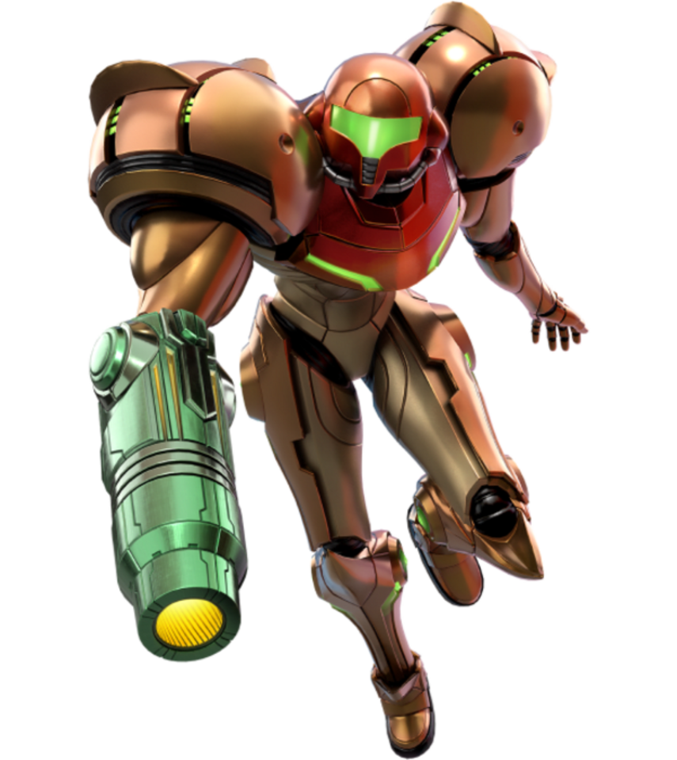

 Welcome to the Metroid Encyclopedia! This is a website documenting all the basic knowledge of the Metroid series. Metroid is a video game series by Nintendo which started in 1986 The series spans over 15 games, and is still going strong to this day. The series pioneered a genre alonside another series, Castlevania, of nonlinear adventure games that emphasize exploration, dubbed, "Metroidvania".
The Metroid series follows bounty hunter, Samus Aran, and her various missions to protect the galaxy from disasterious threats. Whether it be the dangerous Metroids, the terrifying X-Parasites, or the mysterious Phazon substance, she puts her own life on the line to ensure the galaxy is safe and sound.
To learn about the different games of the series, or learn more about who Samus is explore this site to find out. You can leave any questions or suggestions in the suggestions tab!